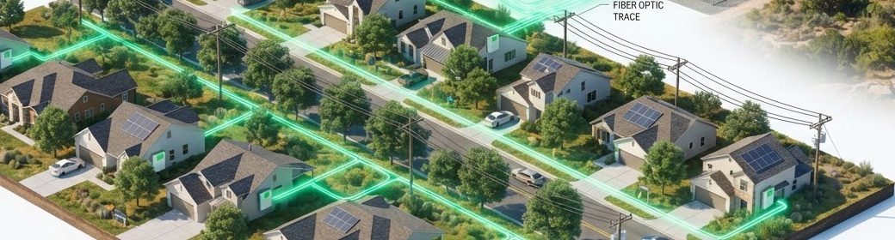

Three rules the control tower keeps on every job.
The member's backup comes first, work stays close to home, and the grid price sets the pace. Each rule below shows its setting in the fleet simulation and what the simulation recorded.
Backup reserve floor
11.8 kWh of each 39.2 kWh pack stays ready for the home's backup.
- A battery sells power only while its charge stays above the floor after the hour.
- Each node holds the floor on its own, so the rule holds while the scheduler is down.
The simulation checks the floor on every node, every hour.
Work moves on the feeder
With two or more nodes on a feeder, 120 nodes over 3 days.
- When a node stops, a neighbor on the same feeder takes its job next and keeps the progress.
- Jobs prefer their own node, then the feeder. Moving data costs $0 on the node, $0.10 on the feeder, $0.40 farther.
Node 0 stops at hour 20. Its job goes to a neighbor on the same feeder.
A feeder with one node restarts the job: 8 GPU-hours to redo.
Price-driven pause
Grid price where the lowest-rate batch job pauses: $0.16 per GPU-hour over a 0.4 kW GPU.
- A GPU runs a job while the job's rate beats its power cost. Higher tiers keep running to higher prices; member jobs to $3,000/MWh.
- The battery sells in the four highest-price hours of the day ahead and charges in the lowest.
Loading the replay.
Nodes by feeder

Illustration Shared feeders keep every GPU-hourFive tiers, highest rate first
Rates come from public GPU cloud prices checked 2026-09-26. Member jobs use at most 25% of a node's hours. Jobs, GPU-hours and margin are the 72-hour replay totals after power and data moves.
| Tier and workload class | Can run on | Rate / GPU-hour | Share of queue | Jobs | GPU-hours | Margin | Pauses above |
|---|
Watch the rules run
The control tower plays the same 72 hours node by node, with the node stop, region outage and scheduler outage.
Base is building the stations; a member AI service is our proposal.